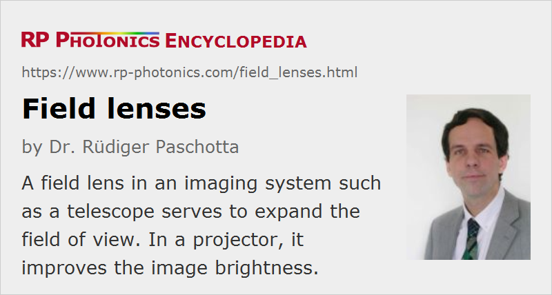

Field Lenses
Definition: lenses in imaging instruments which affect the field of view
More general term: lenses
German: Feldlinsen
Category: vision, displays and imaging
How to cite the article; suggest additional literature
Author: Dr. Rüdiger Paschotta
If in an imaging system a lens is used to increase the field of view, that lens is called a field lens. That term does not imply any special form of lens, but only refers to its function.
Example: Field Lens in a Telescope
We first consider a Keplerian telescope, which consists of two lenses: an objective and an ocular (eyepiece). It provides some angular magnification for viewing distant objects according to the ratio of focal lengths of objective and ocular. For a large magnification, one will thus need to use an ocular with small focal length, which will in practice limit the size of the ocular, since the f-number cannot be arbitrarily small. The problem is then that the diameter of the ocular limits the field of view. Even for moderate viewing angles, some of the rays cannot enter the ocular any more, so that one has some vignetting, as can be seen in Figure 1.
This problem can be cured by inserting an additional lens (a field lens) in the intermediate image plane (see Figure 2). The rays for the on-axis object point are not affected by the field lens, because they go through its center. For the off-axis object point, the rays are bent towards the ocular – all by the same amount, because they all go through the same point on the field lens –, so that they can now get through the ocular. Thus, the vignetting effect is avoided. The field lens can help to expand the field of view of the telescope.
Interestingly, the field lens (when placed in the intermediate image plane) does not modify the magnification. Also, it can be shown that the combination of field lens and ocular lens has the same focal length as the ocular lens alone.
A general problem with a field lens arises from the fact that it is placed in an image plane: its details can then appear in the generated image. For example, scratches on a lens surface or dust particles will be visible – while for other lenses (e.g. the outer surface of the objective) they may not have any noticeable effect on the image, because they are far away from an image plane. In order to mitigate that problem and/or in order to place some other optical element (e.g. a reticle) in the image plane, a field lens is sometimes slightly displaced from the image plane. There, it may still perform essentially the same function, while still not having a substantial influence on the image magnification.
Another problem with field lenses can be that they reduce the eye relief, i.e., the distance of the exit pupil from the eye lens.
The field lens can be integrated into the ocular. The second lens of the ocular may then be called the eye lens.
Field Lens in an Illumination System
In the illumination system of an overhead projector, for example, one often uses a condenser lens just before the object to be imaged (e.g. a slide). While that lens does not significantly modify the diameter of the illuminated object area, it serves to bend the light rays coming from the light source such that they stay within the imaging system, and a brighter image is obtained. The condenser lens is then also called a field lens.
Questions and Comments from Users
Here you can submit questions and comments. As far as they get accepted by the author, they will appear above this paragraph together with the author’s answer. The author will decide on acceptance based on certain criteria. Essentially, the issue must be of sufficiently broad interest.
Please do not enter personal data here; we would otherwise delete it soon. (See also our privacy declaration.) If you wish to receive personal feedback or consultancy from the author, please contact him e.g. via e-mail.
By submitting the information, you give your consent to the potential publication of your inputs on our website according to our rules. (If you later retract your consent, we will delete those inputs.) As your inputs are first reviewed by the author, they may be published with some delay.
See also: imaging, lenses, field stops
and other articles in the category vision, displays and imaging
|  |
If you like this page, please share the link with your friends and colleagues, e.g. via social media:
These sharing buttons are implemented in a privacy-friendly way!